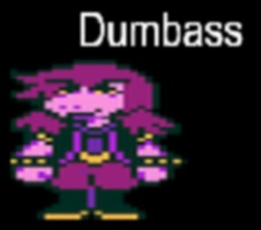
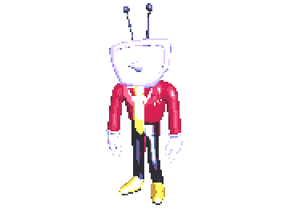
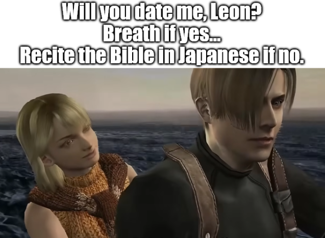
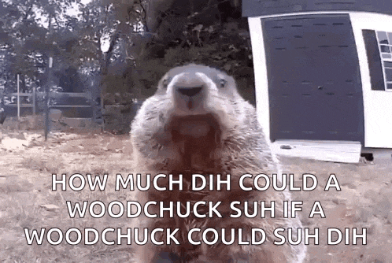

^^ Cool roguelite tower defense game, fight ghosts with desserts and drinks through a haunted mansion, hand drawn by me comes out early access for Halloween :D
pls pls pls pls pls pls pls - Himejoshiheart
-
hi
when the light is running low and the shadows start to grow and the places that you know seem like fantasy theres a light inside your soul thats still shining in the cold with the truth the promise in your heart dont forget im with you in the dark
cool ficThe Greatest Lyrics Ever Written
Fab 5 Freddy told me everybody's fly
DJ spinnin', I said, "My, my"
Flash is fast, Flash is cool
François c'est pas, flashé no deux
And you don't stop, sure shot
Go out to the parking lot
And you get in your car and drive real far
And you drive all night, and then you see a light
And it comes right down, and it lands on the ground
And out comes a man from Mars
And you try to run, but he's got a gun
And he shoots you dead, and he eats your head
And then you're in the man from Mars
You go out at night, eatin' cars
You eat Cadillacs, Lincolns, too
Mercurys and Subaru
And you don't stop, you keep on eatin' cars
Then, when there's no more cars, you go out at night
And eat up bars where the people meet
Face to face, dance cheek to cheek
One to one, man to man
Dance toe to toe, don't move too slow
'Cause the man from Mars is through with cars
He's eatin' bars, yeah, wall to wall
Door to door, hall to hall
He's gonna eat 'em all
Rapture, be pure
Take a tour through the sewer
Don't strain your brain, paint a train
You'll be singin' in the rain
Said, don't stop to punk rock


YURI!!!!!!!!!!!!!
plot of the Transformers final battle:
Galvatron gloats to the Autobots that with the power of Fortress Maximus he is unstoppable. As they hang helpless in the air, he first shocks and then drops them all to the ground. Side Burn drags himself to the edge of a huge crater, at the bottom of which Optimus Prime lays battered. As Optimus struggles up, Scourge and Ruination burst through the crater wall and open fire on the Autobot leader. Sky-Byte and the Predacon trio peer cautiously out of the hole as well, worrying what Galvatron will do to them if he spots them. Unfortunately for them, Galvatron already has spotted them, and orders them to attack the Autobots. Figuring that Galvatron will always be the scarier of the two options, the four Predacons get ready to fight, and are promptly trampled by the oncoming forces.
The Autobots come to Optimus Prime's aid, hailing the Decepticons with a barrage of weapons fire. High above the battlefield, Galvatron laughs and seizes them all in an energy field. T-AI opens a portal to the space bridge nearby, but Optimus is seized by a beam from Galvatron. He orders his men to enter the space bridge, but they block the beam of energy, freeing him. Though Optimus stubbornly refuses to go, he's grabbed by Ultra Magnus and carried off.
In the space bridge, Optimus persuades Magnus to help him return to the battle. They form Omega Prime and challenge Galvatron to a one-on-one fight. Galvatron follows Omega into the space bridge, where Omega instructs T-AI to open portals to the Earth's molten core and close them once he and Galvatron have gone through. T-AI and Koji protest that that will trap the pair of them, but Omega makes it a direct order. Koji, however, has a brainwave and begins contacting other children over the Internet.
Omega Prime leads Galvatron to the Earth's core, but his strength is quickly sapped by the conditions while Galvatron thrives. Koji's plan begins to work and Fortress Maximus becomes re-energised with the power sent to him by all of the children. Galvatron boasts that he has discovered a great power—the world's children—which he intends to harness. He's interrupted by the arrival of a massive burst of energy passed on by Fortress Maximus, which re-powers Omega Prime and creates the mighty Matrix Blade. The pair clash violently until Galvatron's Striker Lance shatters, and an immense explosion lights up the sky. T-AI cries that while Omega may have won, he's still trapped.
Sometime later, Koji sadly looks around the parking building where the Autobot base is located, commenting that the place seems deserted. As he trudges down the road, a fire engine pulls up behind him—it's Optimus Prime. Optimus tells Koji that they'll be going back to Cybertron soon, but first they're going to have a last look around. Optimus got free because the sheer force of the blast that deactivated Galvatron reactivated the space bridge and freed him. Sure enough, the Autobots are all engaging in their usual leisure activities. Fortress Maximus and Ultra Magnus are taking the Decepticons and Predacons back to Cybertron—all except Sky-Byte, who cheerfully swims off into the sunset.
Hey there, want the summary of ANOTHER transformers episode?
Carly and Spike are on a drive through the countryside inside Hoist when they are overtaken by two speeding vehicles. They pursue and see one of the cars make an improbable crash off a cliff and land on top of the other. Before they can investigate, a man on the top of the cliff yells at them for ruining the shot. It turns out they've driven into the middle of a movie set. Hoist saves the imperiled drivers of the crashed cars, and the director is so impressed, he hires Hoist on the spot for his next movie. The director invites Spike and Carly along to visit the movie studio.
In the skies, Dirge is having trouble transporting a mysterious, heavy load. He crashes into the swamp set on the lot of Major Pictures. Megatron orders him to shut down, yells at Starscream for no good reason, then sends Astrotrain, Ramjet and Thrust to go after Dirge and retrieve the mysterious cargo.
Hoist arrives at Major Pictures for his big-screen debut, but gets the brush-off from the director. Before filming begins, Tracks, Warpath, Sunstreaker and Powerglide hone in on the set and ham it up for the director's attention. Strangely, the director is impressed by their hi-jinks and decides to hire them all for the action picture.
Movie work doesn't prove to be as glamorous as they had hoped. The bots wind up crashing into buildings and playing second fiddle to the human actors, Karen Fishook and Harold Edsel, while Hoist pulls them out of the smoldering wreckage after each take.
Disgruntled at their bit parts, the Autobots ask Hoist to lobby the director for better roles, but the director tells Hoist to get a bagel and sit tight. The Autobots take off just as Astrotrain and the other Coneheads show up to pull Dirge and the cargo out of the swamp set, all as the cameras roll.
Back at Decepticon headquarters, Megatron looks over the strange device. He isn't sure what it does; he only knows that Wheeljack built it, but he's sure that it is some kind of potent, deadly weapon. (He doesn't know Wheeljack very well, does he?) When switched on by Thrust, the device sparks and smokes, but does nothing else. Enraged, Megatron bashes Starscream. Astrotrain then reveals that he and the others were filmed by the humans when they retrieved the device. Megatron orders everyone to the studio to steal or destroy the footage so the device remains a secret.
At the studio, the director is viewing the robot footage and decides to revamp the script into a science fiction epic blockbuster called Attack of the Alien Robots, to the dismay of the human cast. He calls the Autobots to return with the promise of better parts. Once back, the director has the Autobots don googly-eyed, buck-toothed alien masks and stomp around after the female lead. For some reason, the Autobots still don't like their parts as monsters from space.
Making their rounds, Spike and Carly find the room where the film negatives are stored and discover that someone has stolen scenes from the movie. That someone was Starscream, but Soundwave reports to Megatron that the original negative still exists. Megatron pounds on Starscream again, this time ripping wires out of his chest! He then orders the others to get the negative.
Meanwhile, the Autobots are filming another scene with pyrotechnics, which have been switched for actual explosives by Rumble. Spike and Carly are in a screening room watching a new print of the stolen footage of the Decepticons and the device. Midway through the screening, Soundwave rips through the screen and destroys the projector. Spike and Carly rush to the film vault to get the original before the Decepticons do, but are interrupted by Megatron. Carly fools him by giving him an empty film canister, and they race around the studio lot with the Decepticons close on their heels. They finally meet up with Hoist, who has a plan.
Megatron and the others finally catch up and find the Autobots on a movie set. Hoist threatens to drop the humans and the film into a vat of flesh-eating lava if the ‘Cons don’t withdraw. Megatron says he won’t do it, but Hoist drops them in. Content that the film is gone, the Decepticons retreat. Hoist then lifts Spike and Carly from the “lava”, which is just bubbly, muddy water mixed with special effects.
The Autobots show the film to Wheeljack in the screening room. The Autobot scientist laughs at Megatron because the device Megatron wanted so much is actually worthless. Impressed with Hoist's performance at the lava pit, the director offers him the leading part in a new film, but Hoist declines, saying that his duty as an Autobot comes first, no matter how unglamorous it is.
I wiped 🥀🥀🥀
Upon scrolling to this post, I had originally thought it would be multiple images, due to the presence of a pair of dots at the bottom, and a pair of numbers in the top right corner. Upon viewing this combination of Ul elements, I had wrongly assumed that this post contained multiple images. Unassumingly, I had placed my right thumb upon the screen where this post was located, and proceeded to drag my right thumb from the right of my phone screen to the left. However, as I began to wipe, a mysterious weariness began to loom over me as I realised that this post may not be what it seems. As I continued to drag my right thumb across my screen, to my horror, I saw the post move to the left of my screen and a new post appear from the right. I had originally thought I would be safe from horrible tricks such as this, but I was gravely mistaken. It was too late for me, and I had wiped to far to go back. The original post had gone too far to the left of my screen, and I watched in horror as the post left my screen and made way for a new one. It had happened. I had wiped on a post that I had originally thought contained multiple images, when indeed it was a trick to make me wipe. As an overwhelming amount of shame surged through me, I placed my right thumb on the left side of my phone screen, and prepared to swipe back. I had been bamboozled, and I was too far gone to change my fatal mistake. As I wiped back to the original post, I couldn't stop thinking of how such a simple trick had completely bamboozled me, betrayed me into a false sense of security, thinking I was safe from posts such as this. As I finally returned to this post, overwhelmed with shame, i decided to enter the comments and place an image of my own to hopefully commend my actions. As I scrolled through the photo roll of my smartphone, I continued to dwell on the shame of my actions. I knew that there was no undoing my mistake, but I could possibly keep a shred of dignity by announcing my mistake. I decided to locate this image of Man, knowing its significance to posts such as these. As I selected this image, I knew that this amount of shame was surreal, and there was no act that could make a person more sorry than wiping on a fake post. As I finalised my comment I thought. Never again. I mustn't let another post bamboozle me like this, for the sheer amount of shame and trauma it has caused it nothing short of fatal. I will not wipe. No more.
i'm sorry i don't watch transformers i just pasted the wiki
💬
Chat Noir
Haiiiii, it's me, the AI assistant you didn't want, need, or know existed until we put a big button on our homepage to tell you about it!
sponsored by MyPayIndia - the Future of Online Banking
happy birthday Nyun D. Hanayagi

happy birthday Nyun D. Hanayagi
ancient mesopotamian brainrot
Fun Herpetology Facts from Hazah
1.The Texas Horned lizard can shoot blood out of its eyes as a self defense mechanism.
2.The Bilbos Rain Frog, otherwise known as the Breviceps bagginsi, is named after the character Bilbo Baggins from J.R.R Tolkiens the hobbit.
3.The suriname toad gives birth from its back.
4.The biggest species of frog is known as the Goliath Frogs( fitting name) and can grow up to 12.5 inches long and weigh as much as 7.2 pounds!
5.The Western/Eastern hognose snakes are a peculiar for the fact that they are the only snake in the United States to display a hood. These snakes are not closely related to cobras.
6.If threatened the Western/Eastern hognose snake will puff out its hood and false strike at whatever threat, if its "threatening display" doesn't work, it plays dead and releases a horrible musk.
7.Axolotls will rarely transform into a terrestrial creature strongly resembling a tiger salamander.
8.Evidence of the earliest reptile dates around 312 million years ago.
9.Many larger reptiles can live months off of a single meal.
10.Most lizards and Snake smell via using their tongue and a special organ on the roof of their mouth that allows them to "taste" scent.
"Why couldn't Augustus Caesar be found in his house? Because...he's Roman!"

This footer is pissing me off I am the original⠀⠀⠀⠀⠀⠀⠀⠀starwalker


.png)